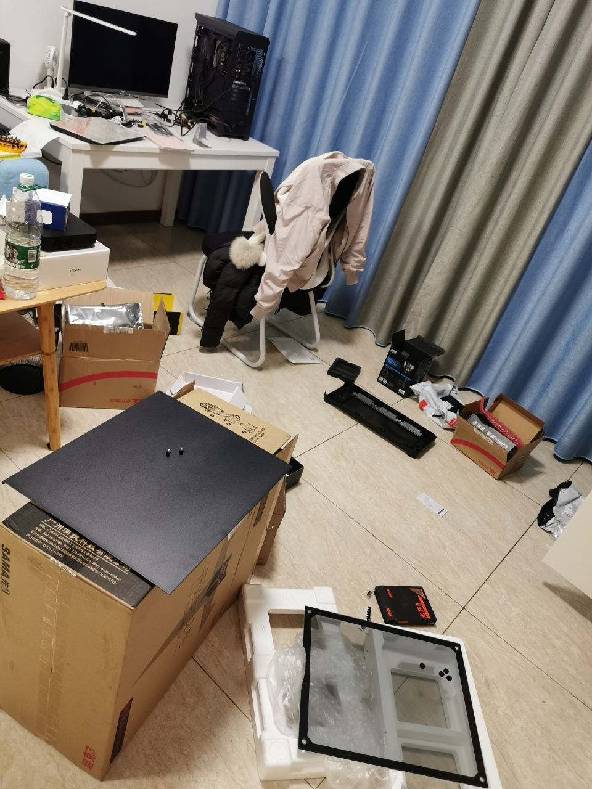

从零开始组装台式机
现在的笔记本已经用了4年了，上半年加了一块8g的内存条，现在用着性能也还不错。但是最近想开始学习渗透和web，需要搭建各种虚拟机环境，有时需要同时跑5、6台虚拟机，笔记本确实受不住。所以，出于性价比和探索精神的考虑，决定尝试自己组装一台windows台式机。感觉有点酷酷的O(∩_∩)O
在开始组装电脑之前，做了一点小功课，其实就是看知乎上别人推荐的各种组件。主要参考了如下两篇文章：
后面这篇文章的作者还写了很多帖子，分别介绍了不同价位的组装机搭配。不一定要完全按照他们推荐的组件进行配置，但能提供一个相对完整的方案给我们这种小白做参考，真的是非常好的。
想要组装一台主机，首先需要知道主机由哪些组件构成，我的理解如下：
- 1、CPU：这是一台主机的核心，计算能力都靠它了。x86架构的有intel和amd两家厂商可选。
- 2、主板：主板上的电路非常丰富，负责连接各个组件，非常重要。
- 3、散热器：顾名思义用来散热的，这里指给cpu散热的散热器。
- 4、内存条：主机的主要组成之一。
- 5、硬盘：分为SSD和普通机械硬盘，前者速度快很多。
- 6、显卡：若CPU不带集显，则必须在主板外接一个显卡，不然无法显示。CPU带集显的情况下也可以自己装个更好的显卡，玩游戏时会有更好的视觉体验。
- 7、电源：电源分很多种，550W，600W，650W，750W等等，根据实际需要进行选择，我是按照参考文章配的电源。
- 8、机箱：用来固定主板，将电源等装在一起，方便后续使用。
- 9、外设：需要鼠标、键盘、显示器这些基本的输入输出设备，不然没法跟主机交互哦。
第一步，买配件
下面介绍一下我组装电脑的配置吧！不包括显卡、显示器、键盘鼠标这些，一共花了6k左右。这个价格和这个配置的性价比，作为电脑组装入门我觉得是很可以的。
1、CPU
i7的cpu不算新，但是也够用吧。这款有三种类型：
- 10700：带集显的cpu
- 10700F：不带集显的cpu
- 10700FK：不带集显且可超频的cpu
我对超频没需求，想自己配显卡，所以选了中间这个10700F型号。
2、主板
微星（MSI）MAG B460M MORTAR WIFI迫击炮电脑主板
主板我留意了技嘉和微星两家的，两家都还不错。因为第一次配机器，怕后面装好后有兼容性等问题，就选了帖子推荐的微星这款。
3、散热器
散热器分为风冷和水冷两种。水冷是新产品，据说很酷炫很烧钱，所以我就选了保守派风冷。目前觉得也挺好用的。
4、内存条
美商海盗船(USCORSAIR)DDR4 3000 32GB(16G×2)套装 台式机内存条 复仇者LPX系列 游戏型
内存条可以根据自己实际需要来选，我觉得是越大越好。公司大部分电脑都是32g的，之前我的笔记本是16g，感觉32g对于目前大部分工作来说是完全够用了的。
内存条的厂商有金士顿，海盗船等等。我选了海盗船16g*2的，为什么不直接买32g呢？因为主板有4个内存条插槽，据说1和3，2和4各自组合起来用效率是最高的，所以买两条充分发挥一下主板的作用。
5、硬盘
西部数据（Western Digital）1TB SSD固态硬盘 M.2接口(NVMe协议) WD_BLACK SN750
硬盘有固态硬盘和机械硬盘之分，考虑速度问题，我买了一块1T的固态硬盘，没有买机械硬盘。如果后面固态硬盘不够用了再考虑从买机械硬盘。
硬盘比较有名的厂商是西部数据，三星，东芝，联想等等，可以挑自己喜欢的。据说西部数据这个黑盘很好，所以我就买来试试。
6、显卡
华硕 （ASUS）电竞特工TUF-GeForce RTX 2060-O6G-GAMING 14000MHz 1365-1740MHz游戏显卡6G
本来是想买上面这张显卡的，但是没抢到。今年好像显卡特别抢手？看了几篇帖子是这么说的，说不推荐现在买显卡。
由于我买的CPU是不带集显的，所以暂时买了个几百块的便宜显卡过渡一下。
7、电源
安钛克(Antec)VP550铜牌 台式机电脑主机机箱电源铜牌550W
电源其实我也不太会选。如果CPU、显卡等组件性能越高功率很大的话，就需要买大功率的电源才能发挥它们的最高性能。我这个算是一般般的配置吧，就按照知乎帖子上推荐的买了550W的。
8、机箱
我买的这个机箱太大了。。。但是又懒得退货了，想着反正一直放在家里就随它吧。如果主板不是很大，也没有很多机械硬盘或固态硬盘需要空间的话，建议女孩子买个小机箱就可以了/(ㄒoㄒ)/~~
9、外设
外设就是键盘鼠标显示器这些，可以根据个人喜好去买，我就不推荐啦。
第二步，组装
说实话，当我把所有组件拆开后，准备开始组装的时候，我后悔了。为什么要给自己找这么大的麻烦/(ㄒoㄒ)/~~
本来以为就像搭积木一样，拼一拼就可以了。
最困难的部分是散热器的安装，幸好在bilibili上找到一个很详细的组装教程，真的是救命教程——【装机教程】这可能是你能在网上找到最详细的装机教程。为了表示我的感谢，第一次在b站上贡献出了2个币，哈哈哈。
装机完成后客厅已经被我折磨成这样了。

第三步，装系统
下面这个视频里讲的很清楚，我就不做重复工作了。 在另一台win10电脑上访问官网，下载官方工具制作U盘启动盘。
【装机教程】超详细WIN10系统安装教程，官方ISO直装与PE两种方法教程，UEFI+GUID分区与Legacy+MBR分区
第四步，装驱动
这也是很重要的一步，主板、显卡、外设等为了发挥最好的作用，需要更新他们的驱动。方法就是访问对应的官网，找到型号，下载安装就可以了。具体可以参考下面这个视频。